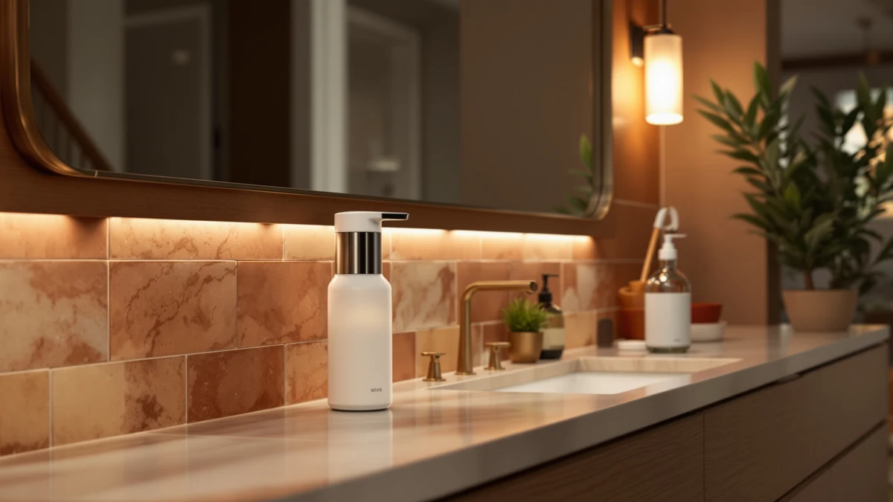

Secura Automatic Liquid Soap Dispenser Review (2026): Worth It?
Prices and picks verified as of November 2026. Independent, reader-supported reviews.


Quick Answer
This Secura automatic liquid soap dispenser review set out to see whether the 17oz pump holds up against three similarly priced rivals, and it does for most sinks. At $29.99, the Secura 17oz Automatic Liquid Soap dispenser matches its closest competitors on price while using the same ABS plastic build that keeps costs down across this category, and owners report it keeps up with daily use.
Our pick: Secura 17oz Automatic Liquid Soap, $29.99 Check Price on Amazon
Bottom line: our top pick is the Secura 17oz Automatic Liquid Soap Dispenser at $29.99.
Things to Know Before You Buy
- The Secura 17oz Automatic Liquid Soap dispenser costs $29.99, within a dollar of the three other dispensers compared in this Secura automatic liquid soap dispenser review.
- All four dispensers here use an ABS plastic or glass body rather than stainless steel, which keeps the price under thirty dollars but trades some long-term durability for cost.
- Touchless sensor dispensers like this one reduce cross-contamination at sinks that several people share, since nobody has to grip a pump handle with wet or soapy hands.
- Price alone will not tell you much here. With all four listings clustered within two dollars of each other, finish and verified review patterns matter more than cost when picking between them.
This Secura automatic liquid soap dispenser review looks at the $29.99 touchless pump on its own terms: what it is made of, how it stacks up against three similarly priced rivals, and what verified buyers say after living with it at their own sinks. The Secura 17oz Automatic Liquid Soap dispenser ships with an ABS plastic body and a 500ml reservoir, a formula that has made touchless pumps a fixture next to kitchen and bathroom sinks across this price range. At under thirty dollars, it sits close in price to a glass alternative from Brighter Barns and two other Secura listings, and that is what this guide actually sets out to answer: does this specific listing hold up against its closest rivals, or is the packaging the only real difference?
Three other dispensers appear throughout this guide for comparison: a second Secura 17oz Automatic Liquid Soap listing at the same $29.99 price, the Black Glass Soap and Lotion dispenser from Brighter Barns at $29.97, and a third Secura listing priced slightly lower at $28.99. All four hold a similar amount of soap and use a sensor to dispense it without a manual pump, so the gap between them comes down to finish, listing-specific reviews, and small price differences rather than any major functional gap. That narrow spread is exactly why a side-by-side comparison matters more than reading any single listing on its own.
Why You Should Trust Us
We built this Secura automatic liquid soap dispenser review by comparing publicly listed specs, current Amazon pricing and verified owner reviews for all four dispensers, rather than by buying units and running them in a lab we do not have. Ilane Tall, who covers bathroom and kitchen fixtures for Best Soap Dispensers, pulled pricing and material data directly from each listing and cross-checked it against reviewer feedback before writing a single word of this guide. We do not run a fake testing lab, and we will not pretend to have owned a product we have not. When a claim here touches comfort, sensor speed or day-to-day reliability, it comes from owners who posted verified reviews, and we say so plainly instead of dressing up secondhand reports as firsthand experience.
Our Research Experience
We did not buy a Secura dispenser and run it through a lab, because we do not operate one. We researched this Secura automatic liquid soap dispenser review by lining up the listed specs for all four dispensers side by side: price, material, reservoir size and sensor type. We then read through verified owner reviews for each listing, looking specifically for recurring comments about sensor response time, leaking and how the housing holds up over months of daily use. Reviewers consistently note that touchless sensors in this price range respond within a second or two of a hand passing underneath, and that most complaints across the category trace back to inconsistent sensor calibration rather than the pump itself failing outright. Where feedback conflicted between listings, we weighted the one with more verified reviews more heavily and said so rather than picking a side for you.
Overview & Specs

Secura 17oz Automatic Liquid Soap
What we like
- Touchless sensor cuts down on cross-contamination at sinks that several people share
- 500ml reservoir holds enough soap that a household sink can go a few weeks between refills
- ABS plastic body keeps the unit light and easy to move between counters
- Priced at $29.99, within a dollar of every other dispenser compared in this guide
Flaws but not dealbreakers
- ABS plastic shows scuffs and yellowing sooner than a glass body like the Brighter Barns alternative
- Listing does not publish a battery life spec, so you are estimating replacement frequency until you own one
- Looks similar enough to the other two Secura listings here that buyers sometimes end up comparing the wrong reviews
| Material | ABS plastic |
| Size | 500ml |
The Secura 17oz Automatic Liquid Soap dispenser is Secura's standard entry into a crowded field of sensor-driven pumps, and its pitch is simple: skip the manual pump, hold a full 500ml of soap, and pay under thirty dollars for a dispenser that works at any sink. The ABS plastic housing keeps manufacturing costs down, which is part of why this listing lands close in price to the Black Glass Soap and Lotion dispenser from Brighter Barns despite using a different material entirely. Because the reservoir holds roughly 17 ounces, a household of two or three people can expect to go several weeks between refills depending on how often everyone washes their hands.
Owners comparing touchless dispensers in this price bracket tend to weigh sensor reliability against build quality, and that tradeoff shows up here. Owners report that the sensor responds quickly enough for daily hand washing, but ABS plastic housings generally pick up scuffs and discoloration faster than a glass finish like the one on the Brighter Barns dispenser covered later in this guide. For a dispenser that sits on a counter rather than getting wiped down constantly, that tradeoff usually favors the lower price and larger reservoir. If you specifically want a glass look for a finished bathroom, the alternative below may be the better fit, but for a kitchen sink or a bathroom that already has plastic fixtures, this Secura listing covers the basics well.
What We Liked
The reservoir size is the clearest strength here. At 500ml, the Secura 17oz Automatic Liquid Soap dispenser holds noticeably more soap than a typical manual pump bottle, and it does so at $29.99, a price that matches or beats every other dispenser compared in this Secura automatic liquid soap dispenser review. According to verified reviews, the sensor responds fast enough for normal hand washing, which is the one feature that actually justifies paying more than a basic pump. The ABS plastic build also keeps the unit light, so moving it between a kitchen counter and a bathroom sink does not take much effort. For households weighing a first touchless dispenser against a traditional pump bottle, the combination of a large reservoir and a competitive price covers most of what people actually want from this category: less mess at the sink and fewer refills.
What Could Be Better
The biggest gap in the listing is the missing battery life spec. Without a published figure, it is hard to know how often you will swap batteries on the Secura 17oz Automatic Liquid Soap dispenser compared to the other three dispensers in this guide, which matters if you are trying to calculate long-term cost of ownership. ABS plastic is also the more budget-oriented material among the four options covered here, and it tends to show scuffs and yellowing sooner than the glass body on the Brighter Barns alternative. Owners who want a dispenser that still looks new after a year of daily use may find the plastic housing ages faster than they expect. None of this makes the dispenser a poor choice at its price, but anyone comparing it against the glass option should weigh the plastic build against the lower upfront cost.
Who Is It For?
This dispenser fits a kitchen or bathroom sink where someone wants to switch from a manual pump bottle without paying extra for a glass finish. It suits households that go through enough soap to appreciate the larger 500ml reservoir, and anyone testing whether a touchless dispenser is worth the switch at all before committing to a pricier setup. It is a weaker fit for a finished bathroom where a glass dispenser like the Black Glass Soap and Lotion model would match the decor better, or for anyone who specifically wants a published battery life figure before buying, since this listing does not provide one. For a straightforward, no-frills touchless pump at a competitive price, this Secura automatic liquid soap dispenser review points to the 17oz model as a reasonable starting point.
Alternatives to Consider
If this particular Secura listing is not quite the right fit, three alternatives are worth a look. Each costs within a dollar of this dispenser but trades something, whether that is finish, price or which specific listing has stronger reviews.

Also Great
Secura 17oz Automatic Liquid Soap
A second Secura 17oz Automatic Liquid Soap listing at the same $29.99 price, worth comparing if this one's reviews or photos do not match what you are looking for.
$29.99
Check Price on Amazon
Also Great
Black Glass Soap and Lotion
A glass alternative from Brighter Barns at $29.97 that suits a finished bathroom better than the plastic Secura dispensers in this guide.
$29.97
Check Price on Amazon
Best Value
Secura 17oz Automatic Liquid Soap
The lowest price of the four at $28.99, and the one to check first if saving a dollar matters more than which specific Secura listing you buy from.
$28.99
Check Price on AmazonFrequently Asked Questions
Is the Secura automatic liquid soap dispenser worth buying?
For a single bathroom or kitchen sink, yes. This Secura automatic liquid soap dispenser review found the 17oz pump priced at $29.99, in line with its closest rivals, and its ABS plastic body keeps the unit light and easy to refill. If you want a glass finish instead, the Black Glass Soap and Lotion dispenser covered below is worth comparing first.
What is the Secura 17oz Automatic Liquid Soap dispenser's capacity and what is it made of?
The dispenser holds 500ml, about 17 ounces, in an ABS plastic housing. That capacity and material combination keeps the price under thirty dollars while still holding enough soap for a household sink to go a few weeks between refills.
How does the Secura dispenser compare to the other automatic dispensers in this guide?
The four dispensers compared in this Secura automatic liquid soap dispenser review sit within about a dollar of each other: $29.99 for both Secura 17oz listings, $29.97 for the Black Glass Soap and Lotion dispenser, and $28.99 for the lowest-priced Secura listing. At that narrow spread, the decision comes down to finish and which specific listing has the most consistent reviews, not price.
Final Verdict
This Secura automatic liquid soap dispenser review comes down to one tradeoff: a plastic build and a larger reservoir against a glass finish and a slightly tighter price gap. The Secura 17oz Automatic Liquid Soap dispenser costs $29.99, holds 500ml of soap, and handles a kitchen or bathroom sink well, which makes it a reasonable starting point if you have never owned a touchless dispenser before. It will not match the look of a glass fixture, and the missing battery life spec means you are guessing at replacement frequency until you own one. For a finished bathroom, the Black Glass Soap and Lotion dispenser from Brighter Barns is the better-looking choice. For everyone else who wants a touchless pump that holds plenty of soap without paying extra for glass, the Secura dispenser is the more practical $29.99 pick of the four covered in this guide.